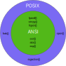

Introduction au langage C
Cours système d'exploitation by Guillaume Chanel, Jean-Luc Falcone and University of Geneva is licensed under CC BY-NC-SA 4.0


Généralités
Un bref historique
Développé par Dennis Ritchie, Bell Labs, entre 1969 et 1973. Intimement lié au développement d’UNIX:
- C à été créer pour pallier aux limites des langages existants (BCPL, B) dans le développement d’UNIX.
- A partir de 1972 le noyaux UNIX est développé en C

Ken Thompson (gauche), un des créateur d’UNIX et Dennis Ritchie (droite)
Brian W. Kernighan and Dennis M. Ritchie , The C Programming Language, Second Edition, Prentice Hall, Inc., 1988.
Première édition: le standard “K&R-C “
Norme ANSI
ANSI C: une norme qui garantie la portabilité:
- Définie les types manipulables et les convention d’utilisation;
- Définie les entêtes de fonctions et constantes de librairies standard;
- Exemples:
math.h: fonctions mathématiques courantes (cos,exp,pow, ...)stdio.h: fonctions d’entrée/sortie du system (printf,scanf,getc, ...)stdlib.h: allocation et libération de mémoire (malloc,free, ...), control du processus en cours (exit, ...), ...
Norme ANSI
| Année | Nom(s) | Addition(s) principales |
|---|---|---|
| 1989 | C89 | |
| 1990 | C90 ISO-9899:1990 | Mineurs: C90 ≈ C89 |
| 1999 | C99 ISO-9899:1999 | Gestion de nouveau types (complexes, booleen, …), inline function, ... |
| 2011 | C11 ISO-9899:2011 | Exécution de threads (default GCC ≈ gnu11) |
Norme ANSI
Le C aujourd'hui
Beaucoup de code libre et ouvert est en C (maintenant en C++):
- GTK+, boite à outils pour le développement d’IHM;
- Glib, boite à outils variée (listes chainée, arbres, timer ...);
- Qt, pour le développement d’applications et d’IHM multiplateformes;
- Boost, boite à outil scientifique (traitement du signal, algèbre linéaire, ...).
Depuis sa création C est resté un langage populaire:
- très utilisé pour le code embarqué et le temps réel, de moins en moins utilisés pour les IHM;
- beaucoup de langages sont inspirés de C (C++, Java, C#, Objective C, PHP).
Les compilateurs
Les principaux compilateurs C:
- GCC: nativement sous Linux et accessible sous Windows grâce à MinGW;
- Microsoft Visual Studio, Borland C: sous Windows avec IDE (Integrated Developpement Environement);
- TCC, LCC: compilateurs ANSI très simples (Linux + Windows).
Caractéristiques principales
Avantages
Langage de bas niveau proche du langage machine et du système
- code rapide et efficace
- accès à la représentation interne des informations
- sous UNIX /Linux le langage C est proche du système et permet de faire des appels au noyaux directement
Langage de haut niveau
- Indépendant de la machine (tant qu’il existe un compilateur C pour celle-ci)
- Beaucoup de types de données sont disponibles (tableaux, structures,…)
- La norme ANSI donne accès à des fonctions de plus haut niveau
Caractéristiques principales
Inconvénients
-
Inadapté au développent occasionnel ou pour le test rapide d’algorithmes
-
L’efficacité peut être au dépend de la compréhension → Ne pas hésiter à mettre des commentaires claire dans le code
-
Langage sans garde fou: indices des tableaux non contrôlés, il est possible de tenter un accès partout en mémoire → programmation défensive:
- toujours se méfier du code que l’on croit correct, s’attendre au pire;
- tester le résultat de tous les appels aux fonctions, penser à toutes les erreurs possibles.
Un premier programme en C
#include <stdio.h>
#include <math.h>
#define PI 3.14159265359
double surface(float x) {
return x * x * PI;
}
/* La fonction main est toujours la première fonction du programmes à être
appellée lors que l'execution*/
int main(void) {
int input, i;
//la fonction printf affiche quelque chose
printf("Veuillez entrer une valeur: ");
scanf("%d", &input); //la fonction scanf lit l'entrée utilisateur
for(i=1; i < input; i++) {
float per = surface(i);
printf("Le resultat pour %d est: %f\n", i, per);
}
return 0;
}
Manipulations de variables
Les directives de pré-compilation (version courte)
Les directives de pré-compilation:
- sont remplacées par leurs évaluation avant la compilation du programme;
- sont toujours précédée d’un '
#' - ne se terminent jamais par un '
;'
La directive include inclue les entêtes des fonctions d’une librairie:
#include <stdio.h>
#include <math.h>La directive define permets de créer une sorte de "constante":
#define PI 3.14159265359Typage et éclaration de variables
| Type | Base de déclaration |
|---|---|
| Entier | int |
| Virgule flottante | float double, un float tenant su plus d'octets and mémoire → plus de valeurs possibles |
| Caractère | char, en fait un petit entier |
| Vide | void, absence de valeur, utile pour les fonctions sans retour et sans paramètres ainsi que pour les pointeurs sur des types inconnus |
Typage et éclaration de variables
Il est possible de combiner ces types avec des mots clef:
| Mot clef | Types acceptés | Effet |
|---|---|---|
short |
int |
diminue la taille de l’entier en mémoire (moins de valeurs disponibles) |
long |
int, double |
augmente la taille de la variable en mémoire (plus de valeurs disponibles) |
unsigned |
char, int |
la valeur ne peut pas être négative → la valeur maximum du nombre augmente |
float maVariable;
int ceciEstUnEntier;
unsigned int ceciEstUnEntierSuperieurAZero;
char ceciEstUnCaractère;
long int ceciEstUnEntierLong;long long int ceciEstUnEntierTresLong; //C99
long ceciEstUnEntierLong;
double ceciEstUnDouble;
long double ceciEstUnDoubleLong = 1.3421; // Declare + init.Booléen
Attention ! Il n’y a pas de type booléen en C89/90. Depuis C99 on peut utiliser:
#include <stdbool.h>
bool unBoolean = true // (en fait true==1 et false==0)D'une manière généralle:
- toute valeur différente de 0 est considérée comme vraie
- 0 ou NULL sont considérés comme faux
Taille des variables
La taille des variables dépend des platformes et compilateurs. Pour connaitre la taille d'une variable:
- Utiliser l'opérateur
sizeof(obj),objpeut être un type ou un nom de variable - les fichiers header "limits.h" et "float.h" donne les limites des types:
CHAR_MIN: valeur minimum d'uncharUINT_MAX: valeur maximum d'unint
- en norme C99, "stdint.h" contient des types avec taille explicite:
int8_t, int16_t, int32_tuint8_t, uint16_t, uint32_t
Règles sur les variables
Les noms de variables doivent suivre les règles suivantes:
- doit commencer par une lettre ou un
_; - peut comporter uniquement lettres, chiffres et
_; - ne doit pas être un nom déjà existant (nom de fonction,
if,sizeof, ...); - il est fortement conseillé d’utiliser des noms de variable claire.
N’oubliez pas d’initialiser les valeurs des variables !
Portée d’une variable:
- Si elle est déclarée entre deux accolades {}, la variable ne sera accessible que entre ces accolades
- Si une variable est déclarée hors de toute accolade (hors de toute fonction) elle est alors globale et accessible de partout. A éviter.
Opérateur usuels
| Type | Opérateurs | Explication / Note | Exemple |
|---|---|---|---|
| Affectation | = | val = 5 | |
| Arithmétique | + - * / % |
Reste de la division entière |
y = 3/4 * x + b 10 % 4 = 2 le reste de 10 / 4 est 2 |
| Comparaison | < <= > >= == != |
Ne pas confondre = et == |
1 > 4 (retourne 0, faux) 7 != 4 (retourne !0, vrai) |
| Logique | && || ! |
ET OU NON |
(y > 8) |
| Binaires | & | ^ ~ << >> |
ET OU XOR NON Décalage à gauche Décalage à droite avec conservation du signe |
5 & 10 (retourne 0) 6 << 1 (retourne 12) 9 >> 2 (retourne 2) |
Question
Etant donnée la definition de fonction suivante:
function test_if_2(int a) {
if(a = 2)
return 1; //or true
else
return 0; //or false
}Que retourne l'appel suivant ?
test_if_2(3)Opérateurs usuels
Il est possible de combiner les opérateurs arithmétiques et logiques avec l’affectation:
int y;
y = 3;
y += 4; //Equivalent à y = y + 4;
x <<= 2; //Equivalent à x = x << 2;Il existe un opérateur d’incrément / décrément (++ et --):
int x, i = 0;
i++; //equivalent à i = i + 1
i--; //equivalent à i = i - 1
x = ++i; //x vaut 1 car l'incrément est fait avant l'affectation
x = i++; //x vaut toujours 1 car l'incrément est fait après l'affectation
L’ordre de priorité des opérateur est:
- l’ordre habituel pour les opérateur arithmétiques;
- modifiable grâce au parenthèses ().
Conversion de types
Dans un calcul le type des variables détermine le type du résultat:
- si un calcul implique des variables de même type le résultat sera de ce type;
- si un calcul implique des variables de types différents le type « le plus général » est choisi.
int xInt = 3, resInt; float xFloat = 3, resFloat; char xChar = 3; resInt = xInt / 4; //resInt vaudra 0 car le calcul est entier resFloat = xInt / 4; //resFloat vaudra 0.00 car le calcul est entier resFloat = xInt / 4.; //resFloat vaudra 0.75 car 4. est un float resFloat = xFloat / 4; //resFloat vaudra 0.75 car xFloat est un float resInt = xFloat / 4; //resInt vaudra 0 (cas resInt est un entier) resInt = xChar + 2; //Convertion automatique et possible (resInt vaudra 5)
int xInt = 3, resInt; float xFloat = 3, resFloat; char xChar = 3; resInt = xInt / 4; //resInt vaudra 0 car le calcul est entier resFloat = xInt / 4; //resFloat vaudra 0.00 car le calcul est entier resFloat = xInt / 4.; //resFloat vaudra 0.75 car 4. est un float resFloat = xFloat / 4; //resFloat vaudra 0.75 car xFloat est un float resInt = xFloat / 4; //resInt vaudra 0 (cas resInt est un entier) resInt = xChar + 2; //Convertion automatique et possible (resInt vaudra 5)
int xInt = 3, resInt; float xFloat = 3, resFloat; char xChar = 3; resInt = xInt / 4; //resInt vaudra 0 car le calcul est entier resFloat = xInt / 4; //resFloat vaudra 0.00 car le calcul est entier resFloat = xInt / 4.; //resFloat vaudra 0.75 car 4. est un float resFloat = xFloat / 4; //resFloat vaudra 0.75 car xFloat est un float resInt = xFloat / 4; //resInt vaudra 0 (cas resInt est un entier) resInt = xChar + 2; //Convertion automatique et possible (resInt vaudra 5)
int xInt = 3, resInt; float xFloat = 3, resFloat; char xChar = 3; resInt = xInt / 4; //resInt vaudra 0 car le calcul est entier resFloat = xInt / 4; //resFloat vaudra 0.00 car le calcul est entier resFloat = xInt / 4.; //resFloat vaudra 0.75 car 4. est un float resFloat = xFloat / 4; //resFloat vaudra 0.75 car xFloat est un float resInt = xFloat / 4; //resInt vaudra 0 (cas resInt est un entier) resInt = xChar + 2; //Convertion automatique et possible (resInt vaudra 5)
int xInt = 3, resInt; float xFloat = 3, resFloat; char xChar = 3; resInt = xInt / 4; //resInt vaudra 0 car le calcul est entier resFloat = xInt / 4; //resFloat vaudra 0.00 car le calcul est entier resFloat = xInt / 4.; //resFloat vaudra 0.75 car 4. est un float resFloat = xFloat / 4; //resFloat vaudra 0.75 car xFloat est un float resInt = xFloat / 4; //resInt vaudra 0 (cas resInt est un entier) resInt = xChar + 2; //Convertion automatique et possible (resInt vaudra 5)
Casting (moulage)
Le casting permet de forcer la conversion de type
resFloat = (float) xInt / 4; // resFloat vaudra 0.75 car x est convertit en float
resFloat = (float) (xInt / 4); /* resFloat vaudra 0.00 car le calcul entier est fait
avant conversion */
resInt = (float) xInt/ 4; // resInt vaudra 0 car resInt est un entierQuestion
Quel est le problème avec les calculs suivants ?
int i; long int l; float f; char c; unsigned char uc; c = -100; uc = c; c = 'ï'; //code ascii = 239 uc = c; l = 320254468; f = 45879651324476.5; i = l * f;
int i; long int l; float f; char c; unsigned char uc; c = -100; uc = c; c = 'ï'; //code ascii = 239 uc = c; l = 320254468; f = 45879651324476.5; i = l * f;
int i; long int l; float f; char c; unsigned char uc; c = -100; uc = c; c = 'ï'; //code ascii = 239 uc = c; l = 320254468; f = 45879651324476.5; i = l * f;
int i; long int l; float f; char c; unsigned char uc; c = -100; uc = c; c = 'ï'; //code ascii = 239 uc = c; l = 320254468; f = 45879651324476.5; i = l * f;
int i; long int l; float f; char c; unsigned char uc; c = -100; uc = c; c = 'ï'; //code ascii = 239 uc = c; l = 320254468; f = 45879651324476.5; i = l * f;
Contrôle du flot d'exécution
Structure conditionelles
Les branchements if
int a, b, c;
...
if((a < 0) || !((b == 2) && (c != 4))) {
printf("La condition est validée\n");
}
else {
printf("La condition n'est PAS validée\n");
}Les boucles for
Les boucles for
//Calcul la somme des N premiers entiers
int value = 0;
for(int i=0; i < N; i++) {
printf("Nouvelle itération de la boucle\n");
value += i;
}Les boucles while
La boucle while
//Calcul la somme des N premiers entiers
int value = 0;
int i = 0;
while(i < N) {
value += i;
printf("Nouvelle itération de la boucle: %d\n", i++);
}La boucle do...while: le contenu est toujours exécuté au moins une fois
//Calcul la somme des N premiers entiers
int value = 0;
int i = 0;
do {
value += i;
printf("Nouvelle itération de la boucle: %d\n", ++i);
}
while(i < N);Intéruption de boucles
Il est possible d’interrompre le déroulement d’une boucle (for, while, do/while) en utilisant les mots clefs:
continue: passe à l’itération suivante;break: sort de la boucle.
//Calcul la somme des nombre impairs allant de 0 à N
value = 0;
i = 0;
while(1) {
if(i > N)
break;
if(i % 2 == 0) {
i++
continue;
}
value += i;
printf("Nouvelle itération de la boucle: %d\n", ++i);
}Attention dans certains cas (cf. ci-dessus), l’utilisation de break et continue est à évitée car elle rend le code moins lisible.
Les fonctions
Une fonction est toujours déclarée avant son utilisation:
typeValeurRetour nomDeLaFonction(type1 param1, ..., typeN paramN)Le mot clef return indique un point d’arrêt de la fonction ainsi que la valeur que la fonction doit retourner.
float pourcentage(int valeur, int centPourcent) {
return ((float) valeur/centPourcent)*100;
}Une fonction peu ne rien retourner:
void pourcentage(int valeur, int centPourcent) {
printf("%f", ((float) valeur/centPourcent)*100);
}Les fonctions
Il est possible de déclarer une fonction juste avec son entête:
- évite d’organiser les fonctions suivant la position de leurs appels;
- Sépare l’interface utilisateur de l’implémentation, un premier pas vers la création de librairies.
float pourcentage(int , int); //Déclaration de l’entête int main(void) { int a,b; ... //Utilisation de la fonction sans implémentation connue pourcentage(a,b) return 0; } float pourcentage(int valeur, int centPourcent){ return ((float) valeur/centPourcent)*100; }
float pourcentage(int , int); //Déclaration de l’entête int main(void) { int a,b; ... //Utilisation de la fonction sans implémentation connue pourcentage(a,b) return 0; } float pourcentage(int valeur, int centPourcent){ return ((float) valeur/centPourcent)*100; }
float pourcentage(int , int); //Déclaration de l’entête int main(void) { int a,b; ... //Utilisation de la fonction sans implémentation connue pourcentage(a,b) return 0; } float pourcentage(int valeur, int centPourcent){ return ((float) valeur/centPourcent)*100; }
Passage par adresse
En C les paramètres sont passés par valeur (pas de modification des variables entrées).
Il n’y a pas de passage par référence, on a recours au passage par adresse:
- on déclare les paramètres de la fonction comme pointeurs et on les utilise comme tel avec le symbole
*; - lors de l’appel à la fonction on passe l’adresse de la variable, symbole &.
/*********************************************************************************
Calcul le pourcentage du nombre "valeur" par rapport à "centPoucent"
IN:
valeur: contient la valeur a mettre en rapport pour le calcul
du pourcentage. Une fois la fonction exécutée valeur
contient le pourcentage.
centPourcent: valeur par rapport à laquelle le pourcentage est calculé
OUT:
retourne -1 si une valeur d'entrée n'est pas valide, 0 sinon
**********************************************************************************/
int versPourcentage(float *valeur, float centPourcent) {
if( (centPourcent > 0) && (*valeur >= 0) ) {
*valeur = (*valeur / centPourcent)*100;
return 0;
}
else
return -1;
}/* Utilisation de la fonction */
int main(void) {
int val = 30; ret;
if ( (ret = versPourcentage(&val, 100)) < 0 )
return ret;
else
return val;
}Les tableaux et chaines de caractères
Déclaration des tableaux
Les tableau sont:
- de type unique;
- indicés de 0 à N-1 pour un tableau de N éléments;
- organisés de manière contigüe en mémoire;
- statiques ou dynamiques (cf. pointeurs et C99).
Décalaration d'un tableau:
#define TAILLE_MAX 10
int tableauDEntiers[TAILLE_MAX];
double tableauDeDoubles[TAILLE_MAX];Utilisation des tableaux
Affecter et lire les valeurs des tableaux:
// Initialization du tableau
for(int i=0; i<TAILLE_MAX; i++)
tableauDEntiers[i] = i+1;
// Alternative mais uniquement lors de la declaration
int tableauDEntiers[TAILLE_MAX] = {1,2,3,4,5,6,7,8,9,10};
// Affichage du tableau
for(int i=0; i<0; i++)
printf("Le tableau contient à l'indice %d la valeur %d", i, tableauDEntiers[i]);Attention !
Attention aux indices des tableaux !
Hors des limites on attends un comportement indéfini:
- Au mieux tout fonctionne correctement.
- Eventuellement une erreur de segment.
- Au pire la valeur d’une autre variable est modifiée et on peut obtenir des erreurs importantes.
Tableau à N dimensions
//Lignes et colonnes sont arbitraires
#define NB_LIGNES 3
#define NB_COLONNES 5
#define NB_MORE 7
double tab2D[NB_LIGNES][NB_COLONNES];
float tab3D[NB_LIGNES][NB_COLONNES][NB_MORE];
float tab4D[NB_LIGNES][NB_COLONNES][NB_MORE][NB_MORE];
for(i=0;i<NB_LIGNES;i++)
for(j=0;j<NB_COLONNES;j++)
tab2D[i][j] = 0.0;L'organisation en mémoire reste linéaire !

Chaine de caractères
Il n’y a pas de type chaine de caractère (string) en C, pour cette raison on utilise des tableaux de caractères.
Une chaine de caractères se termine toujours par le caractère “\0”:
- il faut donc penser à réserver une place pour ce caractère dans le tableau;
- tout ce qui suit le “\0” est ignoré;
- si il n’y a pas de “\0” la chaine de caractères est sans fin (donc plus que la taille du tableau).
Manipulations des chaines
char maChaine[8] = "C cool!"; /* \0 est ajouter après la chaine (pensez a
reserver de la place) */
char maChaine2[] = "C cool!"; // Alloue automatiquement la bonne taille
printf("%s\n", maChaine2); //Affiche la chaine
maChaine[1] = '\0'; // '' pour un caractère et "" pour une chaine
printf("%s\n", maChaine); //Affiche "C"Il existe des fonctions de manipulation de chaines dans la librairie string (inclure string.h), par exemple:
- strncpy(dest, src, n), copie n caractère de la chaine src vers dest;
- strlen(str), retourne la taille de la chaine sans compter ‘\0’;
- strcmp(str1, str2), retourne 0 si les deux chaines sont identiques;
- strncat(dest, src, n), ajoute src à la fin de dest (enlève le ‘\0’), copie au maximum n bytes de src.
Entrée / sortie console
Pour afficher du texte sur stdout (console) on utilise la fonction printf:
printf(texteEtFormat, variable1, variable2, ...)texteEtFormat: une chaine de caractère à afficher entre "" qui spécifie les positions et types des variables à afficher.variable1,variable2, variable à afficher dans l’ordre de leur apparence danstexteEtFormat.
Pour lire du texte sur stdin (console) on utilise la fonction scanf:
scanf(texteEtFormat, *variable1, *variable2, ...)texteEtFormat: une chaine de caractère comme pour printf. Attention taper du texte ici indique que ce texte doit être saisie pas l’utilisateur et non pas que le texte sera affiché sur stdout.*variable1,*variable2, adresse des variables ou vont être rangée les valeurs entréespar l’utilisateur. Pour avoir l’adresse du variable on utilise le symbole &.
Les entête de fonction font partie du fichier stdio.h
Entrées / sortie console
liste des principaux spécificateur (man printf pour une liste complète):
| Spécificateurs | Affichage |
|---|---|
| %d, %i | integer, char |
| %f | float, double |
| %c | unsigned char afficher sous forme de caractère |
| %u | unsigned integer, char |
| %s | string (chaines de caractères) |
| %lS | précède le spécifieur S par une indication de long (e.g. %ld) |
| %Pd, %P.Sf | P indique la taille minimum du champ à afficher S indique le nombre de chiffres significatifs après la virgule |
Entrées / sortie console
On utilise les combinaisons de symboles suivantes pour les caractères spéciaux:
| Symboles | Affichage |
|---|---|
| \n | saut de ligne |
| \r | retour à la ligne |
| \t | tabulation |
| \\ | backslash |
| \' \" | simple ou double quote |
| \0 | NUL character, utilisé pour indiquer la find d'une chaine de caractère |
Entrées / sortie console
int getchar( void )- attends une entrée clavier STDIN
- retourne le code du caractère tapé (sans écrire sur STDIN);
int putchar( int car )- écrit le caractère en paramètre sur STDOUT;
- retourne le caractère si pas d’erreur, EOF sinon.
char* fgets ( char* string, int size, stdin ) //!!!- Ne pas utiliser « gets »
- lit une chaine de caractère sur STDIN de taille maximum size et la place dans “string”;
- stdin est en fait un pointeur sur FILE;
- retourne NULL en cas d’erreur.
int puts (const char* string)- écrit la chaine de caractère “string” sur STDOUT;
- retourne EOF en cas d’erreur.
Exemple d'entrées / sorties
#include <stdio.h>
/* La fonction main est toujours la première fonction du programme à être
appellée lors que l'execution*/
int main(void)
{
float inputFloat;
char inputChar;
int nbCorrespondance;
//Entrée de l'utilisateur pour un float et affichage du
//float de différente manières
printf("Veuiller entrer un float:\t");
scanf("%f", &inputFloat);
printf("Affichage de l'entree sous forme de float: %f\n", inputFloat);
printf("Idem avec 2 digits apres la virgule: %.2f\n", inputFloat);
printf("Idem avec au moins 6 caractères: %6.2f\n", inputFloat);
printf("Notation scientifique: %e\n", inputFloat);
printf("Affichage de l'entree sous forme d'entier %d\n", inputFloat);
//Boucle tant que l'utilisateur n'appuye pas sur 'enter' uniquement
do
{
//Entrée de l'utilisateur pour un caractère
//avec effacement du buffer d'entrée clavier
printf("Veuiller entrer un caractere: ");
while((inputChar = getchar()) != '\n' && inputChar != EOF);
inputChar = getchar(); //could also use scanf("%c", &inputChar);
//Si le caractère est valide l'afficher sous forme d'entier non signé
if(inputChar != '\n')
printf("Le code ASCII de %c est %u\n", inputChar, inputChar);
} while(inputChar != '\n');
return 0;
} //end mainQuestion
Dans quel cas ce code provoque des erreurs?
#include <stdio.h>
#define TAILLE_MAX 3
void affiche_chaine(char*, int);
int main(void)
{
int valeur1 = 1;
char chaine[TAILLE_MAX] = {'a', 'b', '\0'};
int valeur2 = 2;
// Affiche l'état de la mémoire pour les variable ci-dessus
printf("Valeur1:\tAdresse: %x\tValeur:%d\n", &valeur1, valeur1);
affiche_chaine(chaine, TAILLE_MAX);
printf("Valeur2:\tAdresse: %x\tValeur:%d\n", &valeur2, valeur2);
// NE JAMAIS UTILISER GETS
gets(chaine);
// Affiche l'état de la mémoire pour les variable ci-dessus
printf("Valeur1:\tAdresse: %x\tValeur:%d\n", &valeur1, valeur1);
affiche_chaine(chaine, TAILLE_MAX);
printf("Valeur2:\tAdresse: %x\tValeur:%d\n", &valeur2, valeur2);
}Exécution de programme
La fonction main
La fonction main est le point d'entré du programme et a l’entête suivante:
int main (int argc, char *argv[])Arguments:
- argc: nombre d’arguments passés au programme lors de son appel;
- argv: un tableau de chaines de caractères contenant les arguments;
La fonction main retourne un code entier indiquant généralement:
- 0: le programme c’est terminé avec succès;
- !0: le programme à rencontré une erreur.
La fonction exit(int) permet également de terminer un programme à tout moment en renvoyant le code en paramètre (stdlib.h).
Dans le shell on peut taper “echo $?” pour avoir ce code de retour.
Exemple de fonction main
#include<stdio.h>
#include<stdlib.h>
int main(int argc, char *argv[])
{
int i, sum = 0;
if(argc != 0)
printf("Le nom du programme est: %s\n", argv[0]);
if(argc > 1) {
//Sum the inputs
for(i=1;i < argc; i++) {
//Affiche le paramètre traité
printf("Param %d: %s\n", i, argv[i]);
//Convert the parameter to a number and sum it
sum += atoi(argv[i]);
}
}
return sum;
}Variables d'environements
La variable globale environ est un tableau de chaine de caracère permettant d'accéder aux variables d'environement. Cette variable n'es pas utilisée directement, on préférera utiliser:
char* getenv (const char *name)- retourne la valeur de la variable d'environement
namesous forme de chaine de caractère (NULL si pas définit); - attention, la chaine retournée ne doit pas être modifiée et peut être changer par des appels succéssifs a
getenv.
int putenv (char *string)- retourne 0 en case de succès (une autre valeur sinon);
- si
stringest de la formevariable=valuecette définition est ajouté à l'environement. Si la forme destringestvariablela variable est supprimée de l'environement; - attention, si
stringest modifiée ultérieurement, l'environement le sera également.
Compiler et lier un programme

Compiler un programme
gcc appelle automatiquement ld, pour compiler et lier un programme il suffit donc d’utiliser gcc:
$ gcc prog.c -o progLes options principales de gcc:
| Option | Effet |
|---|---|
-Wall |
Affiche tous les warning possibles |
-I dir |
Inclue le répertoire dir pour la recherche de .h |
-g |
Génère les informations symboliques pour debugage |
Compiler un programme
Lorsque gcc trouve une option qu’il ne connait pas il passe cette option et les suivantes a ld.
Il faut toujours mettre les options ld à la fin:
| Option | Effet |
|---|---|
-L dir |
Inclue le répertoire dir pour la recherche de librairie statiques |
-l nom |
Inclue la librairie statique libnom (ne pas mettre le lib) |
Les libraires portent le nom libnom et ce trouvent généralement dans:
/usr/lib
/usr/lib64Par exemple la librairie svn s’appelle “libsvn” et pour la lier on utilise:
$ gcc monClientSVN.c -o clientsvn -l svnDebugger un programme
Si une erreur intervient lors de l’exécution d’un programme le système génère souvent un coredump.
Le coredump est une image de la mémoire (et donc de l’état) du processus lors de son arrêt.
On peut consulter ces informations en utilisant le debugger gdb (GNU debugger):
$ gdb monexecutable -c coreOn peut alors voir:
- la ligne de code responsable de l’erreur;
- la valeur des variables, des arguments des fonctions, de la pile d’exécution des fonctions, ...
Il est bien sûre préférable que l'exécutable contienne des informations symboliques de débuggage (option -g).
Debugger un programme
Il est possible d’utiliser gdb pour debugger un programme directement:
$ gdb monProgUne fois dans le debugger les commandes suivantes sont utiles (help):
run: lance le programme qui poursuit sont exécution jusqu’à une erreur ou la fin;list: liste les 10 lignes de codes autour du point actuel;break param: positionne un breakpoint à la ligne ou la fonction param1;clear param: supprime un breakpoint;cont: continue l’exécution du code;step: exécute la prochaine ligne de code;print param: affiche la valeur courant de la variable param;info param: information sur beaucoup de choses (info locals, info )quit: quitte le débuggage.
Les pointeurs
Concept

Equivalence pointeurs ↔ tableaux
Un tableau (e.g. chaine de caractère) est représentable par un pointeur et une taille.
int main(int argc, char* argv[]) {
char *chainePtr;
char chaineTab[] = "Je suis bien content !";
long long int *intPtr, i;
long long int intTab[TAILLE_TAB];
//Initialisation du tableau d'entiers
for(i=0;i<TAILLE_TAB;i++)
intTab[i] = i+1;
//Mettre les pointeurs sur les tableaux
intPtr = intTab; //equivalent à intPtr = &intTab[0];
chainePtr = chaineTab;
//Affichage des equivalences
printf("Adresse chainPtr: %s, contenu chaineTab: %s\n", chainePtr, chaineTab);
printf("Adresse chainePtr: %x, adresse chaineTab: %x\n", chainePtr, chaineTab);
printf("Contenu chainPtr: %s, contenu chaineTab: %s\n", chainePtr, chaineTab);
for(i=0;i<TAILLE_TAB;i++)
printf("%ld = %ld\n", *(intPtr+i), intTab[i]);
}Question
Quelle est l'équivalence tab[i][j] sous forme de pointeurs ?
Quelle est la différence de taille entre
sizeof(char*)et
sizeof(long int*)Les pointeurs pour les chaines de caractères
En fait toutes les entêtes de fonctions utilisant des chaines de caractère utilisent char*.
Mais attention il reste des différences:
//Exemple de difference:
printf("Taille pointeur: %d, Taille tableau : %d\n", sizeof(intPtr), sizeof(intTab));
//Output: Taille Pointeur: 4, Taille tableau: 160 (20*8, 8 taille d’un long long int)const permet de s’assurer qu’une chaine de caractères (ou toute valeur pointée) ne soit pas modifiée par la fonction:
int afficheChaine(const char *tab)
{
while(*tab) //Equivalent à while(*tab != '\0')
putchar(*(tab++));
puts("\n");
//*tab = 'a'; //Erreur à la compilation !
}Allocation dynamique
L'allocation dynamique ce fait sur le tas:
- permet d’allouer de la mémoire sans savoir à l’avance quelle est la quantité nécessaire exacte;
- La taille de la mémoire allouée dépend donc de l’exécution du programme (i.e. de l’utilisateur et du système).
- cette allocation ce fait dans une zone de la mémoire du processus appelée «tas».
Des fonctions sont disponibles dans stdlib pour effectuer l’allocation de la
mémoire:
malloc(nbOctets): retourne un pointeur sur une zone allouée de nbOctets ou NULL en cas d’erreur d’allocation;calloc(nbElemens, nbOctets): retourne un pointeur sur une zone allouée de nbElements de nbOctets chacun initialisés à 0. Retourne NULL en cas d’erreur d’allocation;free(ptr): libère l’espace mémoire pointé par ptr. Ne remet pas ptr à NULL !
Exemple d'allocation dynamique
#include <stdlib.h>
#include <stdio.h>
int main(void) {
float *dynFloat = NULL;
char *buffer = NULL;
int taille;
printf("Entrer la taille desiree: "); scanf("%d", &taille);
//malloc et calloc retournent void*, il est donc nécéssaire de
//faire un cast dans le bon type du pointeur
dynFloat = malloc(taille*sizeof(float));
buffer = calloc(taille, sizeof(char));
//Erreur lors de l'allocation
if((dynFloat == NULL) || (buffer == NULL)) {
printf("Erreur: impossible d'allouer la memoire necessaire.\n");
free(buffer); free(dynFloat);//Ne fait rien si == NULL
return 1; //ou exit(1)
}
*buffer = 'H'; *(buffer+1) = 'A', *(buffer+2) = 'L';
printf("Contenu buffer: %s\n", buffer); //Ok car mise à zero (calloc)
printf("Contenu float: %f\n", *(dynFloat+3)); //valeur indéfinie
//Libération de la mémoire
free(buffer); free(dynFloat);
return 0;
}Structures de données
Définition de nouveaux types
Il est possible de définir de nouveaux type de variable grâce au mot clé typedef.
Cela permet de:
- augmenter la lisibilité du code;
- garantir une opacité du point de vu de l’utilisateur (il n’a pas besoin de savoir ce qui ce cache derrière le type définit);
- changer le type d’une variable sans avoir à changer toutes les entêtes de fonctions.
typedef unsigned char bool; //definition d'un type booleen
typedef int number; //peut etre facilement remplacé par un float
number traiteLesDonnees(number x); //Fonction qui ne changera pas (à priori)
// TYPES OPAQUES
typedef /*something*/ time_t; //Definition officielle de time_t (time.h)
//It is almost universally expected to be an integral value representing
// the number of seconds elapsed since 00:00 hours, Jan 1, 1970 UTC.
// Definition du type FILE utilisé (mais pas déclaré) dans stdio.h
struct _IO_FILE;
typedef struct _IO_FILE FILE;Définition de structures
Une structure de donnée est une collection de données hétérogènes:
- chaque champ peut avoir un type différent;
- chaque champ à son propre espace mémoire réservé.
Représentation mémoire

Déclaration d'une variable
struct {
int valueInt;
float valueFloat;
char valueChar;
} maVariable;Attention: le mot clef struct ne définit pas un type !
Question
Quel type de structures de données complexe les struct permettent de construire ?
Utilisation de structures (définitions)
Une structure est définie et appelée de la manière suivante:
//Déclaration de la structure
struct personne {
char* nom;
char* prenom;
int age;
};
struct personne unePersonne; // une instance de la structure;Pour plus de facilité on a souvent recours aux définitions de types:
typedef struct el { //el est necessaire pour faire les declaration de pointeurs
struct el *suivant;
void* contenu;
} element_t; //A partir de cette définition on peu déclarer 'element_t unElement'
typedef element_t* listeChainee;Utilisation de structures (API personne)
struct personne createPersonne(const char* nom, const char* prenom, int age) {
int length;
struct personne pers;
length = strlen(nom) + 1; //+1 pour '\0'
pers.nom = calloc(length, sizeof(char));
pers.prenom = calloc(strlen(prenom) + 1, sizeof(char));
if((pers.nom == NULL) || (pers.prenom == NULL)) {
printf("Erreur allocation mémoire\n");
exit(1);
}
strcpy(pers.nom, nom);
strcpy(pers.prenom, prenom);
pers.age = age;
return pers;
}
void affichePersonne(struct personne pers) {
printf("Nom: %s, Prenom: %s, Age: %d\n", pers.nom, pers.prenom, pers.age);
}Utilisation de structures (API listes)
listeChainee initListeChaineeVide() {
return NULL;
}
void addListe(listeChainee* liste, void* contenu) {
//Creation d'un element et ajout dans la liste
element_t *unEl = (element_t*) malloc(sizeof(element_t));
unEl->contenu = contenu; //(*unEl).contenu se transforme en unEl->contenu
unEl->suivant = *liste;
*liste = unEl;
}
void* removeListe(listeChainee *liste) {
listeChainee tmp;
void* ret;
ret = (*liste)->contenu;
tmp = *liste;
*liste = tmp->suivant;
free(tmp); //Libération de la mémoire
return ret;
}Utilisation de structures (programme)
int main(void)
{
struct personne *ptPersonne;
listeChainee maListe = initListeChaineeVide();
//Une première personne ajoutée
unePersonne = createPersonne("Rodepeter", "Jessica", 36);
affichePersonne(unePersonne);
addListe(&maListe, &unePersonne);
//Une seconde personne ajoutée
if((ptPersonne = malloc(sizeof(struct personne))) == NULL)
{
printf("Erreur mémoire\n");
return 1;
}
*ptPersonne = createPersonne("Page", "Marc", 8);
affichePersonne(*ptPersonne);
addListe(&maListe, ptPersonne);
//Recupère le contenu de la liste
affichePersonne(*( (struct personne*) removeListe(&maListe)));
affichePersonne(*( (struct personne*) removeListe(&maListe)));
free(ptPersonne);
return 0;
}Enumérations
Les énumérations permettent de créer des types:
- dont les valeurs sont discrètes, qualitative et éventuellement ordonnées;
- en fait ces valeurs sont représentées par des entiers.
Exemples de déclarations:
enum typeMedaille { bronze, argent, or };
typedef enum { false, true } booleen;
typedef enum { lundi = 1, mardi, mercredi, jeudi, vendredi, samedi, dimanche } jours;
typedef enum { micro = 2, mineur = 4, leger = 5, modere = 6, major = 7, important = 9,
devastateur = 10} richter;Exemples d'utilisations:
jours aujourdhui;
aujourdhui = mardi;
if(aujourdhui != mardi)
printf("Que faites-vous la ?\n");
else
printf("Merci d'etre la.\n");Enumérations
enum typeMedaille maMedaille = or;
switch(maMedaille) //Séparer les different cas que peut prendre une variable
{
case bronze:
printf("Peux mieux faire !\n");
break; //A ne pas oublier
case argent:
printf("Pas mal !\n");
break;
case or:
printf("Le controle est par la...\n");
break;
default:
printf(“Erreur: type de medaille non connu\n");
}Attention les énumération ne sont PAS fortement typées:
//Toutes ces affectations sont autorisées !!!
//Mais à éviter !
int tremblementFukushima = 9; //Déclaré comme entier au lieux de richter
richter tremblement = 3; //La valeur 3 n’est pas dans la liste
booleen estValideMaisFaux = mardi; //mardi = 2 -> n’est pas dans la listeUnions
Comme les structures, une union a plusieurs champs mais dans le même espace mémoire:
- l’adresse de chaque champs est la même;
- l’union a la taille du plus grand des champ.
typedef struct {
int valueInt;
float valueFloat;
char valueChar;
} u;
typedef union {
int valueInt;
float valueFloat;
char valueChar;
} s;Unions
Utilisé pour:
- minimiser l’espace mémoire nécessaire à un programme;
- la simulation du polymorphisme avec la création de type « variant »;
- la conversion de types (conversion sauvage non contrôlée par le compilateur).
#include <stdio.h>
#include <stdint.h>
typedef union {
int16_t valueInt;
struct {
unsigned char msb; //most significant byte
unsigned char lsb; //least significant byte
} bytes;
} convert;
int main(void) {
convert value;
printf("Entrer un entier: ");
scanf("%d", &value);
printf("Valeur entree: %d\n", value.valueInt);
printf("Valeur entree (hexadecimal): %x\n", value);
printf("MSB: h%02x, LSB h%02x\n", value.bytes.lsb, value.bytes.msb);
}Organisation d'un programme
Modules
Un programme complexe est divisé en modules (.c + .h)

Cela permet notament de:
- créer une forme d'encapsulation qui facilite le deboguage et les mises à jour;
- réduire les temps de compilation en ne compilant que les modules modifiés;
- répartir le travail entre programmeurs;
- favoriser le partage de code (bibliothèques).
Compilation de modules
On peu utiliser un module en le compilant avec son programme principal:

Compilation de librairie
On peu utiliser un module en créant une librairie (statique dans cet exemple):

Lier une librairie
Pour utiliser la librairie il faut la lier:

Types opaques
Les types opaques sont des structures de données (i.e. typedef) qui ne sont pas définies dans l’interface (i.e. fichier header).
Cela permet:
- cacher les détails l’implémentation -> abstraction;
- de modifier la structure de donnée sans modifier le comportement du code utilisateur.
ListeChainee.c
#include "listeChainee.h"
/*Déclaration dans le .c pour une
utilisation privée */
typedef struct el {
struct el *suivant;
void *contenu;
} element_t;
listeChainee initListeChaineeVide() {
return NULL;
}Listechainee.h
// Anciennement typedef element_t* listeChainee;
typedef struct el* listeChainee;
listeChainee initListeChaineeVide();
void addListe(listeChainee* liste, void* contenu);
void* removeListe(listeChainee *liste);Fonctions static
Le mot clef static permet de:
- s’assurer que une fonction sera locale à un module (i.e. elle ne pourra pas être utilisée dans un autre module);
- Libérer le nom de cette fonction pour d’autres modules.
main.c
#include <stdio.h> void show() { // PAS DE CONFLIT ! printf("Main show\n"); } void main() { show(); interface(); }
#include <stdio.h> void show() { // PAS DE CONFLIT ! printf("Main show\n"); } void main() { show(); interface(); }
interface.c
#include <stdio.h> static void show() { //PAS DE CONFLIT ! printf("Interface show\n"); } void interface() { show(); }
#include <stdio.h> static void show() { //PAS DE CONFLIT ! printf("Interface show\n"); } void interface() { show(); }
Attention le mot clef static est est aussi utilisé pour des variables mais il peu avoir un sens différent dans ce cas.
Exemple d'orgnanisation d'un programme

Makefiles
Complexité de compilation modulaire
Lorsque l’on a plusieurs modules qui dépendent les uns des autres il deviens difficile de savoir quel module il faut recompiler après une modification.

Création d'un makefile
Un makefile est un fichier texte qui contient des objectifs de compilation:
- chaque objectif représente (en général) un fichier .o ou le programme;
- chaque objectif est associé à:
- une liste de dépendances (.o, .c, .h);
- une commande à exécuter si une des dépendances à une date plus récente que l’objectif.

Exemple de Makefile
paint: main.o images.o gui.o graphics.o
gcc main.o images.o gui.o graphics.o -o paint
main.o: main.c images.h gui.h
gcc -c main.c -o main.o
images.o: images.c images.h graphics.h
gcc -c images.c -o images.o
gui.o: gui.c gui.h graphics.h
gcc -c gui.c -o gui.o
graphics.o: graphics.c graphics.h
gcc -c graphics.c -o graphics.oUtilisation d'un makefile
Pour compiler il suffit de taper:
$ make objectifPour compiler le premier objectif:
$ makeVariables
On peut également ajouter des noms de variable pour effectuer des changements facilement ou générer le makefile automatiquement:
VARIABLE = valuePour utiliser le contenu de la variable:
$(VARIABLE) ou ${VARIABLE}On peut aussi définir des variables lors de l'exécution de la commande make:
$ make VARIABLE=value objectifDans ce cas on utilise ?= si l'on souhaite remplacer la valeur de la variable dans le makefile par celle donnée en paramètre par l'utilisateur:
VARIABLE ?= valueAmélioration d'un makefile (1)
CC = gcc
OBJS = main.o images.o gui.o graphics.o
CFLAGS = -g -Wall -c
LFLAGS = -L /home/me/blas/openblas/lib -l openblas
paint: $(OBJS)
$(CC) $(OBJS) -o paint $(LFLAGS)
main.o: main.c images.h gui.h
$(CC) $(CFLAGS) paint.c -o main.o
images.o: images.c images.h graphics.h
$(CC) $(CFLAGS) images.c -o images.o
gui.o: gui.c gui.h graphics.h
$(CC) $(CFLAGS) gui.c -o gui.o
graphics.o: graphics.c graphics.h
$(CC) $(CFLAGS) graphics.c -o graphics.oBranchements conditionels
Les branchements permettent de définir des variables ou des commandes différentes suivant une condition.
Par exemple:
libs_for_gcc = -lgnu
normal_libs =
foo: $(objects)
ifeq ($(CC),gcc)
$(CC) -o foo $(objects) $(libs_for_gcc)
else
$(CC) -o foo $(objects) $(normal_libs)
endifsource: tutorialpoint
On peut aussi utiliser ifneq.
Amélioration d'un makefile (2)
CC = gcc
OBJS = main.o images.o gui.o graphics.o
CFLAGS = -g -Wall -c
BLASLIB ?= openblas
ifeq ($(BLASLIB), openblas)
LFLAGS = -L /home/me/blas/openblas/lib -l openblas
else ifeq ($(BLASLIB), cblas)
LFLAGS = -L /home/me/blas/cblas/lib -l cblas
else
$(error unknown library $(BLASLIB))
endif
paint: $(OBJS)
$(CC) $(OBJS) -o paint $(LFLAGS)
...Objectifs PHONY (bidon)
Certain objectifs ne sont pas associés à des fichiers
.PHONY = clean install # pas obligatoire mais evite le test d'existence de fichiers
clean:
rm ./*.o ./paint
install:
cp ./paint /usr/local/binQuestions
Quelles sont les actions usuelles pour compiler les sources d’un programme téléchargé sous Unix ?
Pourquoi la commande «clean» précédente peut être dangereuse si mal utilisée ?
Refaire un graph de compilation et le makefile à partir de l’exemple listechainee et personnes.
Directives de Precompilation
Include
Inclure les entêtes (.h) de fonctions des librairies ou des fichier C :
- pour les entêtes de librairies standard (emplacements prédéfinis):
#include <stdlib.h> - pour les entêtes utilisateur (même emplacement que le fichier courant puis emplacements prédéfinis):
#include "listeChainee.h"
Macros
On peu définir des macros et constantes de la manière suivante:
#include <stdio.h>
#include "precomp.h"
#define USUAL 10; //Déjà vu
#define WHY //on peut aussi declarer des define sans valeur
//Défintion de macro:
//Notez que ? et : sont utilisable dans le code
//pour remplacer les if
#define COMPUTE (INPUT / USUAL) //INPUT has to be defined
#define MIN(a,b) (((a) < (b)) ? (a) : (b))
int main()
{
char string[] = STRING; //STRING doit etre defini lors de la compilation
printf("defined STRING: %s\n", string);
printf("defined VALUE: %d\n", INPUT); //INPUT doit être défini lors de la compilation
printf("Le plus petit nombre est: %d\n", MIN(INPUT, 5));
}Lors de la compilation:
$ gcc precomp.c -o precomp -D STRING="\"Je suis bien content\"" -D INPUT=5Question
Y a-t-il des cas ou une macro ne sera pas dans un .h ?
Directives pré-définies
Des constantes sont prédéfinies par la plupart des compilateurs pour chaque fichier source:
- __DATE__ string indiquant le jour du dernier passage du pré-compilateur;
- __TIME__, string indiquant la date du dernier passage du pré-compilateur;
Utile pour la gestion d'erreurs:
- __LINE__, numéro de ligne du fichier;
- __FILE__, nom du fichier .
Utile pour compiler du code différent suivant la platforme:
- _WIN32, _WIN64 , __unix__, __APPLE__, __MACH__ définissent le type de système d’exploitation
Compilation conditionelle
La compilation conditionelle:
- Effectue une pré-compilation différente suivant les paramètres de pré-compilation;
- Compile un code différent suivant les paramètres de pré-compilation;
Utile pour:
- La compilation sur des plateformes différentes;
- L’inclusion infinie de .h;
- pour la création de constantes suivant les options de compilation;
#if TAILLES==0
#define TAILLE_TAMPON 512
#elif TAILLES==1
#define TAILLE_TAMPON 1024
#else
#define TAILLE_TAMPON 2048
#endif#ifndef _win64
//Quelque chose pour les platformes 64 bit windows
#elif defined _win32
//Quelque chose pour les platformes windows
#else
//Quelque chose pour les autres
#endifCompilation conditionelle
precomp.h
#ifndef _PRECOMP_H //Evite l’inclusion infinie
#define _PRECOMP_H
//Define a constant with the system name
#ifdef __unix__
#define SYS "Unix"
#elif defined _WIN32
#define SYS "Windows"
#elif defined __APPLE__
#define SYS "Mac"
#else
#define SYS "Unknown"
#endif
/********************* User interface************************/
/*************************************************************
Détermine quel est le caractère de séparation des répertoires
qui correspond au système d'exploitation sur lequel le programme
as été compilé.
IN: vide
OUT: retourne un caractère représentant le séparateur de dossiers.
retourne -1 si il n'as pas pu être identifié (système non identifié)
**************************************************************/
char getCharSep();
#endif //#def _PRECOMP_HCompilation conditionelle
precomp.c
/*************************************************************
Détermine quel est le caractère de séparation des répertoires
qui correspond au système d'exploitation sur lequel le programme
as été compilé.
IN: vide
OUT: retourne un caractère représentant le séparateur de dossiers.
retourne -1 si il n'as pas pu être identifié (système non identifié)
**************************************************************/
char getCharSep()
{
#ifdef __unix__
return '/';
#elif defined _WIN32
return '\\';
#elif defined __APPLE__
return '/';
#else
return -1;
#endif
}